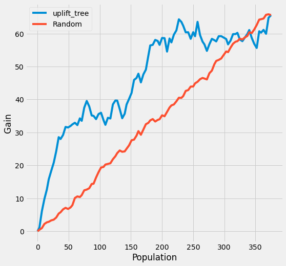

# Code from https://github.com/uber/causalml/tree/master/examplesimport numpy as np
import pandas as pd
from causalml.dataset import make_uplift_classification
from causalml.inference.tree import UpliftRandomForestClassifier
from causalml.metrics import plot_gain
from sklearn.model_selection import train_test_splitGenerate synthetic dataset
The CausalML package contains various functions to generate synthetic datasets for uplift modeling. Here we generate a classification dataset using the make_uplift_classification() function.
df, x_names = make_uplift_classification()df.head()| treatment_group_key | x1_informative | x2_informative | x3_informative | x4_informative | x5_informative | x6_irrelevant | x7_irrelevant | x8_irrelevant | x9_irrelevant | ... | x12_uplift_increase | x13_increase_mix | x14_uplift_increase | x15_uplift_increase | x16_increase_mix | x17_uplift_increase | x18_uplift_increase | x19_increase_mix | conversion | treatment_effect | |
|---|---|---|---|---|---|---|---|---|---|---|---|---|---|---|---|---|---|---|---|---|---|
| 0 | control | -0.542888 | 1.976361 | -0.531359 | -2.354211 | -0.380629 | -2.614321 | -0.128893 | 0.448689 | -2.275192 | ... | -1.315304 | 0.742654 | 1.891699 | -2.428395 | 1.541875 | -0.817705 | -0.610194 | -0.591581 | 0 | 0 |
| 1 | treatment3 | 0.258654 | 0.552412 | 1.434239 | -1.422311 | 0.089131 | 0.790293 | 1.159513 | 1.578868 | 0.166540 | ... | -1.391878 | -0.623243 | 2.443972 | -2.889253 | 2.018585 | -1.109296 | -0.380362 | -1.667606 | 0 | 0 |
| 2 | treatment1 | 1.697012 | -2.762600 | -0.662874 | -1.682340 | 1.217443 | 0.837982 | 1.042981 | 0.177398 | -0.112409 | ... | -1.132497 | 1.050179 | 1.573054 | -1.788427 | 1.341609 | -0.749227 | -2.091521 | -0.471386 | 0 | 0 |
| 3 | treatment2 | -1.441644 | 1.823648 | 0.789423 | -0.295398 | 0.718509 | -0.492993 | 0.947824 | -1.307887 | 0.123340 | ... | -2.084619 | 0.058481 | 1.369439 | 0.422538 | 1.087176 | -0.966666 | -1.785592 | -1.268379 | 1 | 1 |
| 4 | control | -0.625074 | 3.002388 | -0.096288 | 1.938235 | 3.392424 | -0.465860 | -0.919897 | -1.072592 | -1.331181 | ... | -1.403984 | 0.760430 | 1.917635 | -2.347675 | 1.560946 | -0.833067 | -1.407884 | -0.781343 | 0 | 0 |
5 rows × 22 columns
# Look at the conversion rate and sample size in each group
df.pivot_table(values='conversion',
index='treatment_group_key',
aggfunc=[np.mean, np.size],
margins=True)| mean | size | |
|---|---|---|
| conversion | conversion | |
| treatment_group_key | ||
| control | 0.511 | 1000 |
| treatment1 | 0.514 | 1000 |
| treatment2 | 0.559 | 1000 |
| treatment3 | 0.600 | 1000 |
| All | 0.546 | 4000 |
Run the uplift random forest classifier
In this section, we first fit the uplift random forest classifier using training data. We then use the fitted model to make a prediction using testing data. The prediction returns an ndarray in which each column contains the predicted uplift if the unit was in the corresponding treatment group.
# Split data to training and testing samples for model validation (next section)
df_train, df_test = train_test_split(df, test_size=0.2, random_state=111)uplift_model = UpliftRandomForestClassifier(control_name='control')uplift_model.fit(df_train[x_names].values,
treatment=df_train['treatment_group_key'].values,
y=df_train['conversion'].values)y_pred = uplift_model.predict(df_test[x_names].values)# Put the predictions to a DataFrame for a neater presentation
result = pd.DataFrame(y_pred,
columns=uplift_model.classes_)Create the uplift curve
The performance of the model can be evaluated with the help of the uplift curve.
Create a synthetic population
The uplift curve is calculated on a synthetic population that consists of those that were in the control group and those who happened to be in the treatment group recommended by the model. We use the synthetic population to calculate the actual treatment effect within predicted treatment effect quantiles. Because the data is randomized, we have a roughly equal number of treatment and control observations in the predicted quantiles and there is no self selection to treatment groups.
# If all deltas are negative, assing to control; otherwise assign to the treatment
# with the highest delta
best_treatment = np.where((result < 0).all(axis=1),
'control',
result.idxmax(axis=1))
# Create indicator variables for whether a unit happened to have the
# recommended treatment or was in the control group
actual_is_best = np.where(df_test['treatment_group_key'] == best_treatment, 1, 0)
actual_is_control = np.where(df_test['treatment_group_key'] == 'control', 1, 0)synthetic = (actual_is_best == 1) | (actual_is_control == 1)
synth = result[synthetic]Calculate the observed treatment effect per predicted treatment effect quantile
We use the observed treatment effect to calculate the uplift curve, which answers the question: how much of the total cumulative uplift could we have captured by targeting a subset of the population sorted according to the predicted uplift, from highest to lowest?
CausalML has the plot_gain() function which calculates the uplift curve given a DataFrame containing the treatment assignment, observed outcome and the predicted treatment effect.
auuc_metrics = (synth.assign(is_treated = 1 - actual_is_control[synthetic],
conversion = df_test.loc[synthetic, 'conversion'].values,
uplift_tree = synth.max(axis=1))
.drop(columns=list(uplift_model.classes_)))plot_gain(auuc_metrics, outcome_col='conversion', treatment_col='is_treated')